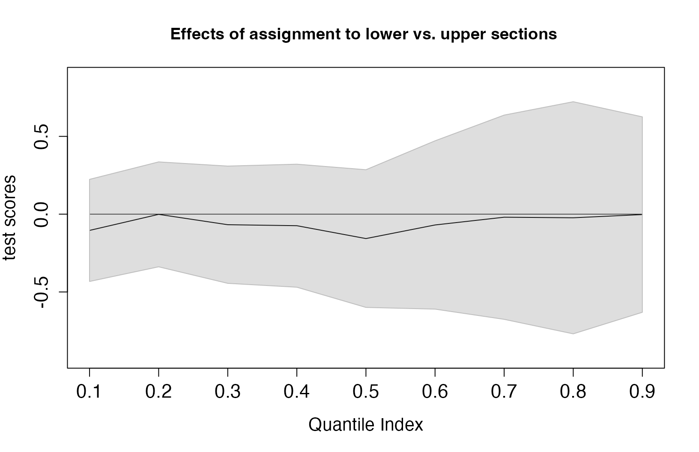
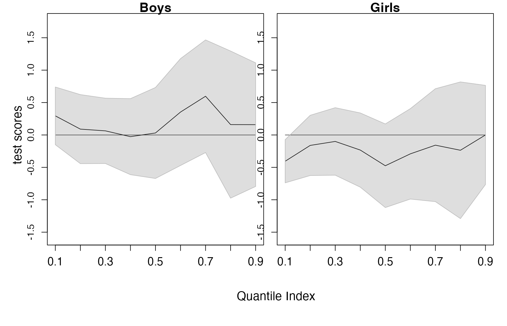

QTE in RDD
QTE_RD.RmdIntroduction
The QTE.RD package provides tools to test, estimate, and conduct uniform inference on quantile treatment effects (QTEs) in sharp regression discontinuity (RD) designs. These methods are particularly useful for detecting and analyzing heterogeneous treatment effects.
Instead of focusing solely on average effects, users can assess a policy’s impact across the entire distribution of an outcome variable. When significant heterogeneity is identified by examining the distributional effects for the full sample, the package can help pinpoint the source of the heterogeneity by allowing for covariate-specific effects in the RD design.
The statistical theory underlying these methods was developed by Qu and Yoon (2019) and Qu, Yoon, and Perron (2024), who introduced uniform inference procedures and robust bias correction for QTE in RD designs. QTE.RD implements these methods in a user-friendly interface.
Scope of this Vignette
This vignette serves as a practical guide for users with some familiarity with quantile regression and RD designs. For those seeking a more detailed introduction to the methodology and its applications, we refer to Qu and Yoon (2025), which discusses both the theoretical foundations and the practical use of QTE.RD in detail.
Getting Started
QTE.RD can be installed from CRAN via
install.packages("QTE.RD")The package depends on quantreg for quantile
regression. If it is not already installed, install it with:
install.packages("quantreg").
Illustration by Examples
After installing the QTE.RD package, it can be loaded by
library(QTE.RD)The package provides four main functions:
rd.qte()- Estimates QTEs over a range of quantiles using local-linear regressions and constructs uniform confidence bands. Users can include covariates and apply either no bias correction or robust bias correction (Qu, Yoon, and Perron 2024).rdq.test()- Tests three hypotheses on treatment effects: Treatment Significance, Homogeneity, and Unambiguity. It supports covariates and robust bias correction, with critical values obtained via simulation.rdq.bandwidth()- Selects bandwidths using either cross-validation or MSE-optimal rules. Both can be applied to check robustness.plot.qte()- Produces figures of QTE estimates and uniform confidence bands to visualize estimation and testing results.
Data and Background
For illustration, we apply these functions to study the effect of tracking (assigning students into separate classes based on prior achievement) on student performance. We use a subset of the dataset from Duflo, Dupas, and Kremer (2011), which is included in the package and can be loaded with:
data("ddk_2011")The data ddk_2011 comes from an experiment in 121 Kenyan
primary schools that received funds in 2005 to hire an extra teacher and
split their single first-grade class into two sections. Schools were
randomly assigned to treatment group, 61 tracking schools, or control
group, 60 non-tracking schools. In tracking schools, students were
assigned to upper or lower section based on baseline test scores. In
non-tracking schools, students were randomly assigned.
The experimental design has rich random variations, featuring elements of both randomized controlled trials (RCT) and RD. By comparing tracking and non-tracking schools, that is, by exploiting the RCT structure, one can study the effect of tracking on all students. Additionally, by analyzing median students within tracking schools, that is, by exploiting the RD structure, one can study the effect of tracking on marginal students who barely made or missed the opportunity of being assigned to a high ability section.
This study design incorporates elements of both randomized controlled trials (RCT) and regression discontinuity (RD). The RCT component—comparing tracking and non-tracking schools—reveals the impact of tracking on all students. The RD component—examining students near the median in tracking schools—identifies effects on those just above or below the high-ability cutoff.
This vignette will focus on the RD-based evidence, which provides insight into how tracking affects students at the margin. Readers interested in the RCT-based evidence can find a more detailed analysis in Qu and Yoon (2025).
The experiment lasted 18 months. The outcome is the sum of math and language scores on endline tests, and the running variable for RD is student’s percentile rank from the baseline test. To explore heterogeneity in treatment effects, we include baseline test scores, gender, age at the endline test, and teacher status (civil servant vs. contract) as covariates.
Variables
Define some key variables:
trk <- ddk_2011$tracking
con <- ddk_2011$etpteacher
hgh <- ddk_2011$highstream
yy <- ddk_2011$ts_std
xx <- ddk_2011$percentileThere are three indicator variables; trk takes 1 for
tracking schools (and 0 for non-tracking schools), con
takes 1 for students assigned to a contract teacher, high
takes 1 for students assigned to low-achieving sections (if in tracking
schools). The variable yy is the endline test scores
normalized by the mean and standard deviation of non-tracking schools
and xx is student’s percentile rank from the baseline test.
Because the outcome variable is normalized, the unit of the effect is a
standard deviation of the endline test score (of non-tracking
schools).
RDD - Overview
We focus on tracking schools to evaluate the effects of tracking
using the RD design. Specifically, we examine students near the median
of the baseline test score, comparing those who just qualified for the
upper section to those who narrowly missed it. The outcome and running
variables (yc and xc below) include only
students from tracking schools. The cutoff is the median of the baseline
percentile (x0 = 50), and the treatment indicator
(dc below) equals 1 for students placed in the
high-achieving section.
yc <- yy[trk==1]
xc <- xx[trk==1]
dc <- hgh[trk==1]
x0 <- 50
tlevel <- 1:9/10
hh <- 20The last two lines set the values of two parameters;
tlevel defines the range of quantile index to be [0.1,0.9]
and hh is the bandwidth at the median of the outcome
distribution.
QTE from RDD without covariates
In rd.qte(), when x includes the running
variable only and z0 is unspecified, one can estimate
quantile effects at x0 without covariate.
A <- rd.qte(y=yc,x=xc,d=dc,x0,z0=NULL,tau=tlevel,bdw=hh,bias=1)
A2 <- summary(A,alpha=0.1)
A2
#>
#>
#> QTE
#> ----------------------------------------------------------------------
#> Bias cor. Pointwise Uniform
#> Tau Est. Robust S.E. 90% Conf. Band
#> 0.1 -0.104 0.135 -0.426 0.217
#> 0.2 -0.001 0.142 -0.338 0.336
#> 0.3 -0.068 0.147 -0.418 0.282
#> 0.4 -0.074 0.156 -0.445 0.297
#> 0.5 -0.157 0.177 -0.579 0.265
#> 0.6 -0.069 0.224 -0.602 0.463
#> 0.7 -0.020 0.273 -0.669 0.630
#> 0.8 -0.023 0.316 -0.775 0.729
#> 0.9 -0.003 0.262 -0.626 0.621The outcome table shows some essential elements of the analysis
including point estimates of QTE, standard errors, and uniform
confidence bands. Because the bias option is activated,
bias=1, the table reports the bias corrected point estimate
and the robust standard error and robust uniform band. If
bias=0, one would obtain QTE estimates and uniform bands
without the bias correction. In the second line, alpha=0.1,
so a 90% uniform confidence band is reported. If
alpha=0.05, one would get a 95% uniform confidence
band.
The estimated quantile effects are small in magnitude (the maximum effect is -0.157 standard deviation when \(\tau=0.5\)) and the uniform confidence band includes zero throughout the quantile range. This confirms a finding in Duflo, Dupas, and Kremer (2011) who concluded that ``the median student in tracking schools scores similarly whether assigned to the upper or lower section.’’ The QTE estimate provides even stronger evidence that not only on average but also on the entire endline score distribution, students near the median of the initial test scores fare similarly regardless of whether they were assigned to the upper or lower ability section.
To examine the shape of the effect graphically,
plot.qte() function can be used to produce QTE plots along
with uniform confidence bands.
y.text <- "test scores"
m.text <- "Effects of assignment to lower vs. upper sections"
plot(A2,ytext=y.text,mtext=m.text)
It is of interest to examine the conditional quantile functions from
two sides of the cutoff. The function plot.qte() can make
such plots with the option ptype=2. The inputs for
conditional quantile plots include estimates for two conditional
quantile functions, qp and qm, and their
uniform bands, bandp and bandm. These outputs
are produced by summary.qte() and already saved in
A2, as the next example shows.
y.text <- "test scores"
m.text <- "Conditional quantile functions"
sub.text <- c("Upper section","Lower section")
plot(A2,ptype=2,ytext=y.text,mtext=m.text,subtext=sub.text)To test the (lack of) effect, one can use the rdq.test()
function. When alpha=c(0.1,0.05), it provides critical
values at the 10% and 5% levels. The type option determines
the type of tests to be conducted. To test the treatment significance,
set type=1 and to test the treatment homogeneity
hypothesis, change it to type=2. For the unambiguity
hypothesis with the effects unambiguously positive (or negative) under
the null hypothesis, set type=3 (or type=4).
These options can be combined: the lines below set
type=c(1,2,3,4), leading to tests for all four
hypotheses.
B <- rdq.test(y=yc,x=xc,d=dc,x0,z0=NULL,tau=tlevel,bdw=hh,bias=1,
alpha=c(0.1,0.05),type=c(1,2,3,4),std.opt=1)
B
#>
#>
#> Testing hypotheses on quantile process
#> --------------------------------------------------------------------------------
#> NULL Hypthoesis test stat. critical value p value
#> 10% 5%
#> ================================================================================
#> Significance: QTE(tau|x,z)=0 for all taus 0.87 2.34 2.63 0.94
#> Homogeneity: QTE(tau|x,z) is constant 0.52 1.83 2.06 0.98
#> Dominance: QTE(tau|x,z)>=0 for all taus 0.87 2.07 2.30 0.59
#> Dominance: QTE(tau|x,z)<=0 for all taus 0.00 2.07 2.39 1.00When std.opt=1, the test statistic is standardized by
the pointwise standard deviations of the limiting process. As a result,
the quantiles that are estimated imprecisely receive less weight in the
construction. When std.opt=0, the tests are not
standardized. The default is std.opt=1.
The outcome table displays the null hypotheses to be tested, test statistics, critical values, and p-values. All four tests indicate that QTEs are likely to be zero over the entire quantile range.
The empirical evidence from the RDD indicates that there is no difference in endline achievement between marginal students regardless of whether they were assigned to the upper or lower section. Because students in the upper section had much higher achieving peers, this implies that there may be a factor that offsets the positive peer effect. One possibility is that tracking may allow teachers to adjust their instruction to students’ needs. Duflo, Dupas, and Kremer (2011) explored this potential channel and documented evidence that teachers had incentives to focus on the students at the top of the distribution.
The bandwidth (at the median) can be estimated as follows.
C <- rdq.bandwidth(y=yc,x=xc,d=dc,x0,z0=NULL,cv=1,val=(5:20),pm.each=0)
C
#>
#>
#> Selected Bandwidths
#> ------------------------------------------------------------
#> Method Values
#> ============================================================
#> Cross Validation 20
#> MSE Optimal 16.0 16.2The cross-validation option is enabled by cv=1, so the
table reports both CV and MSE optimal bandwidths. The candidate
bandwidth values for cross-validation are set to \(\{5,6,\ldots,20\}\) by
val=(5:20). In this example, bandwidth 20 (at the median)
was selected by the cross-validation method and used accordingly.
For very large samples, computing the CV bandwidth may take a long
time. In such a case, set cv=0 and use the MSE optimal
bandwidth at least for the initial stage of data exploration. The
function rdq.bandwidth() offers flexibility by allowing
users to adjust several option arguments; see Qu
and Yoon (2025) for more
details.
QTE from RDD with covariates
To see heterogeneity in the effect of tracking, one can include
additional covariates. This section compares effects of tracking for
boys and girls. The covariate zc is a female dummy and the
evaluation point \(z_0\) is set by
z.eval = c(0,1). The order of display in the outcome table
is the same as the order of the group in \(z_0\).
zc <- ddk_2011$girl[trk==1]
z.eval <- c(0,1)
A <- rd.qte(y=yc,x=cbind(xc,zc),d=dc,x0,z0=z.eval,tau=tlevel,
bdw=hh,bias=1)
A2 <- summary(A,alpha=0.1)
A2
#>
#>
#> QTE
#> ----------------------------------------------------------------------
#> Bias cor. Pointwise Uniform
#> Tau Est. Robust S.E. 90% Conf. Band
#> ----------------------------------------------------------------------
#> Group-1
#> 0.1 0.295 0.185 -0.144 0.734
#> 0.2 0.090 0.225 -0.446 0.626
#> 0.3 0.063 0.205 -0.425 0.552
#> 0.4 -0.026 0.241 -0.598 0.546
#> 0.5 0.031 0.281 -0.638 0.699
#> 0.6 0.353 0.338 -0.450 1.157
#> 0.7 0.597 0.367 -0.275 1.469
#> 0.8 0.160 0.456 -0.924 1.244
#> 0.9 0.159 0.397 -0.784 1.102
#> ----------------------------------------------------------------------
#> Group-2
#> 0.1 -0.406 0.140 -0.736 -0.075
#> 0.2 -0.161 0.192 -0.616 0.293
#> 0.3 -0.100 0.217 -0.613 0.413
#> 0.4 -0.233 0.241 -0.801 0.335
#> 0.5 -0.475 0.271 -1.114 0.164
#> 0.6 -0.291 0.293 -0.983 0.400
#> 0.7 -0.158 0.352 -0.989 0.674
#> 0.8 -0.236 0.432 -1.255 0.783
#> 0.9 0.000 0.324 -0.764 0.764Because z.eval <- c(0,1) and \(z_0 = 0\) means boys, the outcome table
shows results for boys first (shown as Group-1) and girls later
(Group-2). For boys, the quantile effects of being in the upper ability
section is positive but insignificant. For girls, the effects are mostly
negative and insignificant. But at the bottom of the outcome
distribution, when \(\tau = 0.1\), the
negative effect turns to be significant.
To see the group-wise difference graphically, one can draw QTE plots as follows.

The plot clearly shows that tracking has positive but insignificant
effect for marginal male students, but the effect is negative for
marginal female students and significantly so at the left tail. To
explore further, it will be useful to draw plots for the conditional
quantile functions (by setting ptype=2) separately for each
group.
y.text <- "test scores"
m.text <- c("Boys","Girls")
sub.text <- c("Upper section","Lower section")
plot(A2,ptype=2,ytext=y.text,mtext=m.text,subtext=sub.text)The plot shows that for girls, the conditional quantile function of endline test scores for the upper section is consistently below that of the lower section, and the difference is largest at the left tail.
Tests for hypotheses for each group can be done as well.
B <- rdq.test(y=yc,x=cbind(xc,zc),d=dc,x0,z0=z.eval,tau=tlevel,bdw=hh,
bias=1,alpha=c(0.1,0.05),type=c(1,2,3,4))
B
#>
#>
#> Testing hypotheses on quantile process
#> --------------------------------------------------------------------------------
#> NULL Hypthoesis test stat. critical value p value
#> 10% 5%
#> ================================================================================
#> Group-1
#> Significance: QTE(tau|x,z)=0 for all taus 1.63 2.37 2.60 0.43
#> Homogeneity: QTE(tau|x,z) is constant 1.16 1.91 2.13 0.53
#> Dominance: QTE(tau|x,z)>=0 for all taus 0.11 2.01 2.34 0.88
#> Dominance: QTE(tau|x,z)<=0 for all taus 1.63 2.13 2.39 0.23
#> --------------------------------------------------------------------------------
#> Group-2
#> Significance: QTE(tau|x,z)=0 for all taus 2.80 2.46 2.70 0.038
#> Homogeneity: QTE(tau|x,z) is constant 1.12 2.07 2.33 0.61
#> Dominance: QTE(tau|x,z)>=0 for all taus 2.80 2.11 2.44 0.017
#> Dominance: QTE(tau|x,z)<=0 for all taus 0.00014 2.08 2.49 0.90The results indicate that it is not possible to reject hypotheses that the QTE is consistently zero for boys, but there is evidence that the effects can be negative for girls. For female students the null hypothesis of no effect (significance) and positive uniform effect (dominance) are rejected at the 5% confidence level.
The bandwidth can be selected as well.
C <- rdq.bandwidth(y=yc,x=cbind(xc,zc),d=dc,x0,z0=z.eval,cv=1,
val=(5:20),pm.each=0)
C
#>
#>
#> Selected Bandwidths
#> ------------------------------------------------------------
#> Method Values
#> ============================================================
#> Cross Validation 19
#> MSE Optimal,Group-1 14.2 15.0
#> MSE Optimal,Group-2 17.7 20.0When users would like to see the effect of the bias correction on
point estimates and uniform bands, it will be convenient to use the
function rdq.band(). Its options are the same as those in
rd.qte(). The difference is that it implements estimation
with and without bias correction and present results side by side.
D <- rdq.band(y=yc,x=cbind(xc,zc),d=dc,x0,z0=z.eval,tau=tlevel,
bdw=hh,alpha=0.1)
D
#>
#>
#> QTE and Uniform Bands
#> ----------------------------------------------------------------------
#> Bias cor. 90% Uniform Conf. Band
#> Tau Est. Est. Non-robust Robust
#> ----------------------------------------------------------------------
#> Group-1
#> 0.1 0.118 0.295 -0.195 0.431 -0.137 0.727
#> 0.2 0.014 0.090 -0.369 0.396 -0.432 0.612
#> 0.3 0.022 0.063 -0.329 0.373 -0.428 0.555
#> 0.4 -0.023 -0.026 -0.429 0.384 -0.604 0.552
#> 0.5 0.044 0.031 -0.429 0.517 -0.630 0.691
#> 0.6 0.093 0.353 -0.460 0.645 -0.437 1.144
#> 0.7 0.194 0.597 -0.425 0.813 -0.267 1.462
#> 0.8 0.096 0.160 -0.705 0.897 -0.967 1.288
#> 0.9 0.267 0.159 -0.454 0.987 -0.818 1.136
#> ----------------------------------------------------------------------
#> Group-2
#> 0.1 -0.204 -0.406 -0.455 0.047 -0.749 -0.062
#> 0.2 -0.111 -0.161 -0.458 0.236 -0.635 0.312
#> 0.3 -0.128 -0.100 -0.526 0.269 -0.624 0.424
#> 0.4 -0.186 -0.233 -0.627 0.255 -0.803 0.337
#> 0.5 -0.335 -0.475 -0.835 0.165 -1.131 0.181
#> 0.6 -0.136 -0.291 -0.667 0.395 -0.997 0.414
#> 0.7 -0.142 -0.158 -0.802 0.517 -1.043 0.728
#> 0.8 -0.148 -0.236 -0.922 0.626 -1.298 0.826
#> 0.9 0.085 0.000 -0.488 0.657 -0.788 0.788Without bias correction, the effect for girls at the 10th percentile is no longer statistically significant, as the estimate is smaller. Otherwise, the conclusion does not change.
So far, we have illustrated using a discrete covariate, but continuous variables — or a combination of both discrete and continuous covariates — can also be incorporated. For more details, please refer to Qu and Yoon (2025).